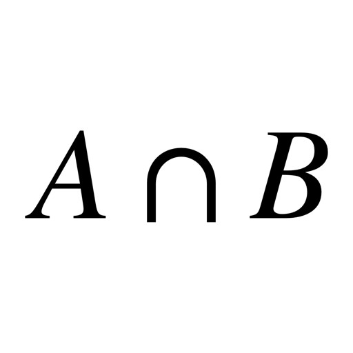
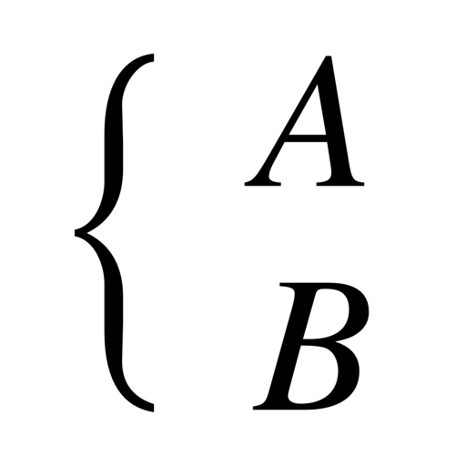
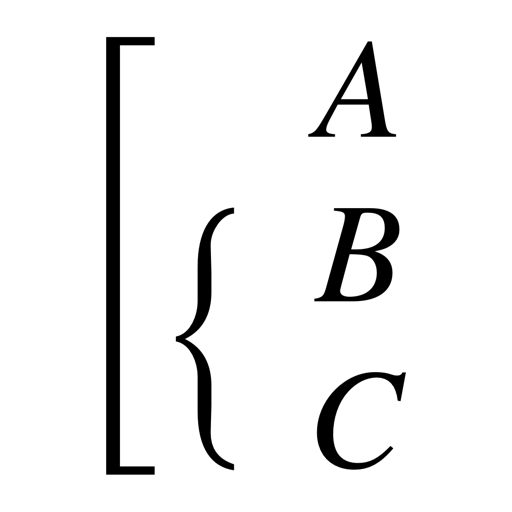
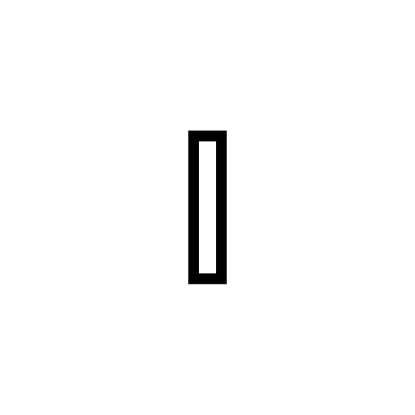

Set Theory
| Operation | Result | LaTeX code |
|---|---|---|
| Intersection |  |
\cap |
| Union |  |
\cup |
| Empty set |  |
\emptyset |
| Element of |  |
\in |
| \ni | ||
| Not element of | \notin | |
| \notni | ||
| Subset of | \subset | |
| \subseteq | ||
| Not subset of | \nsubset | |
| \nsubseteq | ||
| Superset of |  |
\supset |
| \supseteq | ||
| Not Superset of |  |
\nsupset |
| \nsupseteq | ||
| Symmetric difference |  |
\Delta |
| Complement |  |
\overline A |
| Complement |  |
A' |
| For all |  |
\forall |
| Exists |  |
\exists |
| Cardinality |  |
|A| |
| Intersection of A and B |  | A \cap B |
| Union of A and B |  |
A \cup B |
| A without B |  |
A \backslash B |
| A without B with added spaces |
 |
A \ \backslash \ B |
| Complement to the union of A and B |
 |
\overline {A \cup B} |
| Intersection of A and B |  | \[ \begin{cases} \ A \\ \ B \end{cases} \] |
| Union of A and B |  |
\begin{equation} \left[ \begin{aligned} \ A \\ \ B \end{aligned} \right. \end{equation} |
| Union of A and Intersection of B and C |
 | \begin{equation} \left[ \begin{aligned} \ A \\ \left\{ \begin{aligned} \ B \\ \ C \end{aligned} \right. \end{aligned} \right. |
| Natural | \mathbb{N} | |
| Integer | \mathbb{Z} | |
| Rational | \mathbb{Q} | |
| Real | \mathbb{R} | |
| Imaginary |  | \mathbb{I} |
| Complex | \mathbb{C} | |
 |
\sqsubset | |
| \sqsubseteq | ||
 |
\sqsupset | |
 |
\sqsupseteq |